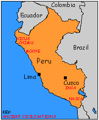
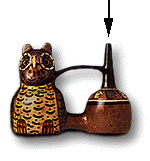

 Some of the most unusual pottery produced in the Americas was made by people who lived along the coast and in the river valleys of Peru. The whistling pots, such as this one shaped as an owl, have proved interesting to the scientists at the British Museum.
When air is blown into the open-ended, hollow tube (to the right of the owl), the owl makes a whistling sound. Whistling pots were made in many different shapes and designs - animals, birds and human-like figures with the different pots making different noises. But what makes them whistle?